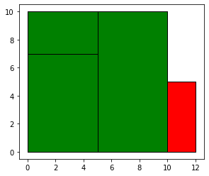

Estimation Walkthrough¶
[37]:
from shapely.geometry import Polygon
import numpy as np
%matplotlib inline
[38]:
import geopandas as gpd
from tobler import area_weighted
[39]:
from tobler.area_weighted import _area_tables_binning as area_tables
from tobler.area_weighted import area_interpolate
Example: Two GeoDataFrames¶
[40]:
polys1 = gpd.GeoSeries([Polygon([(0,0), (10,0), (10,5), (0,5)]),
Polygon([(0,5), (0,10), (10,10), (10,5)])])
polys2 = gpd.GeoSeries([Polygon([(0,0), (5,0), (5,7), (0,7)]),
Polygon([(5,0), (5,10), (10,10), (10,0)]),
Polygon([(0,7), (0,10), (5,10), (5,7) ])
])
df1 = gpd.GeoDataFrame({'geometry': polys1})
df2 = gpd.GeoDataFrame({'geometry': polys2})
df1['population'] = [ 500, 200]
df1['pci'] = [75, 100]
df1['income'] = df1['population'] * df1['pci']
df2['population'] = [ 500, 100, 200]
df2['pci'] = [75, 80, 100]
df2['income'] = df2['population'] * df2['pci']
ax = df1.plot(color='red', edgecolor='k')

[41]:
ax = df2.plot(color='green', alpha=0.5, edgecolor='k')
[42]:
res_union = gpd.overlay(df1, df2, how='union')
ax = res_union.plot(alpha=0.5, cmap='tab10')
df1.plot(ax=ax, facecolor='none', edgecolor='k');
df2.plot(ax=ax, facecolor='none', edgecolor='k');

Area Table¶
[43]:
area_tables?
Signature: area_tables(source_df, target_df, spatial_index)
Docstring:
Construct area allocation and source-target correspondence tables using a spatial indexing approach
...
NOTE: this currently relies on Geopandas' spatial index machinery
Parameters
----------
source_df : geopandas.GeoDataFrame
GeoDataFrame containing input data and polygons
target_df : geopandas.GeoDataFramee
GeoDataFrame defining the output geometries
spatial_index : str
Spatial index to use to build the allocation of area from source to
target tables. It currently support the following values:
- "source": build the spatial index on `source_df`
- "target": build the spatial index on `target_df`
- "auto": attempts to guess the most efficient alternative.
Currently, this option uses the largest table to build the
index, and performs a `bulk_query` on the shorter table.
Returns
-------
tables : scipy.sparse.dok_matrix
File: ~/projects/tobler/tobler/area_weighted/area_interpolate.py
Type: function
[44]:
area_tables(df1, df2, 'auto')
[44]:
<2x3 sparse matrix of type '<class 'numpy.float32'>'
with 5 stored elements in Dictionary Of Keys format>
[45]:
area_tables(df2, df1, 'auto')
[45]:
<3x2 sparse matrix of type '<class 'numpy.float32'>'
with 5 stored elements in Dictionary Of Keys format>
[46]:
extensive_vars = ['population', 'income']
intensive_vars = ['pci']
estimates = area_interpolate(df1, df2, extensive_variables = extensive_vars,
intensive_variables = intensive_vars)
estimates
[46]:
| population | income | pci | geometry | |
|---|---|---|---|---|
| 0 | 289.999998 | 22749.999762 | 82.14286 | POLYGON ((0.00000 0.00000, 5.00000 0.00000, 5.... |
| 1 | 350.000000 | 28750.000000 | 87.50000 | POLYGON ((5.00000 0.00000, 5.00000 10.00000, 1... |
| 2 | 59.999996 | 5999.999642 | 100.00000 | POLYGON ((0.00000 7.00000, 0.00000 10.00000, 5... |
[47]:
extensive_vars = ['population', 'income']
intensive_vars = ['pci']
estimates = area_interpolate(df2, df1, extensive_variables = extensive_vars,
intensive_variables = intensive_vars)
estimates
[47]:
| population | income | pci | geometry | |
|---|---|---|---|---|
| 0 | 407.142866 | 30785.714924 | 77.500000 | POLYGON ((0.00000 0.00000, 10.00000 0.00000, 1... |
| 1 | 392.857149 | 34714.286193 | 84.999997 | POLYGON ((0.00000 5.00000, 0.00000 10.00000, 1... |
Non-exhuastive case¶
Here the first set of polygons have an envelope that does not coincide with that of the second dataframe.
[48]:
polys1 = gpd.GeoSeries([Polygon([(0,0), (12,0), (12,5), (0,5)]),
Polygon([(0,5), (0,10), (10,10), (10,5)])])
polys2 = gpd.GeoSeries([Polygon([(0,0), (5,0), (5,7), (0,7)]),
Polygon([(5,0), (5,10), (10,10), (10,0)]),
Polygon([(0,7), (0,10), (5,10), (5,7) ])
])
df1 = gpd.GeoDataFrame({'geometry': polys1})
df2 = gpd.GeoDataFrame({'geometry': polys2})
df1['population'] = [ 500, 200]
df1['pci'] = [75, 100]
df1['income'] = df1['population'] * df1['pci']
df2['population'] = [ 500, 100, 200]
df2['pci'] = [75, 80, 100]
df2['income'] = df2['population'] * df2['pci']
ax = df1.plot(color='red', edgecolor='k')
df2.plot(ax=ax, color='green',edgecolor='k')
[48]:
<AxesSubplot:>

[49]:
extensive_vars = ['population']
intensive_vars = ['pci']
estimates = area_interpolate(df1, df2, extensive_variables = extensive_vars,
intensive_variables = intensive_vars)
estimates
[49]:
| population | pci | geometry | |
|---|---|---|---|
| 0 | 289.999998 | 82.14286 | POLYGON ((0.00000 0.00000, 5.00000 0.00000, 5.... |
| 1 | 350.000000 | 87.50000 | POLYGON ((5.00000 0.00000, 5.00000 10.00000, 1... |
| 2 | 59.999996 | 100.00000 | POLYGON ((0.00000 7.00000, 0.00000 10.00000, 5... |
[50]:
estimates.sum()
[50]:
population 699.999994
pci 269.642860
dtype: float64
[51]:
extensive_vars = ['population']
intensive_vars = ['pci']
estimates = area_interpolate(df1, df2, extensive_variables = extensive_vars,
intensive_variables = intensive_vars,
allocate_total=False)
estimates
[51]:
| population | pci | geometry | |
|---|---|---|---|
| 0 | 248.333333 | 82.14286 | POLYGON ((0.00000 0.00000, 5.00000 0.00000, 5.... |
| 1 | 308.333333 | 87.50000 | POLYGON ((5.00000 0.00000, 5.00000 10.00000, 1... |
| 2 | 60.000000 | 100.00000 | POLYGON ((0.00000 7.00000, 0.00000 10.00000, 5... |
[52]:
estimates.sum()
[52]:
population 616.666667
pci 269.642860
dtype: float64
When setting allocate_total=False the total population of a source zone is not completely allocated, but rather the proportion of total population is set to the area of intersection over the area of the source zone.
This will have no effect when the source df is df2 and the target df is df 1:
[53]:
extensive_vars = ['population']
estimates = area_interpolate(df2, df1, extensive_variables = extensive_vars)
estimates
[53]:
| population | geometry | |
|---|---|---|
| 0 | 407.142866 | POLYGON ((0.00000 0.00000, 12.00000 0.00000, 1... |
| 1 | 392.857149 | POLYGON ((0.00000 5.00000, 0.00000 10.00000, 1... |
[54]:
extensive_vars = ['population']
estimates = area_interpolate(df2, df1, extensive_variables = extensive_vars, allocate_total=False)
estimates
[54]:
| population | geometry | |
|---|---|---|
| 0 | 407.142857 | POLYGON ((0.00000 0.00000, 12.00000 0.00000, 1... |
| 1 | 392.857143 | POLYGON ((0.00000 5.00000, 0.00000 10.00000, 1... |